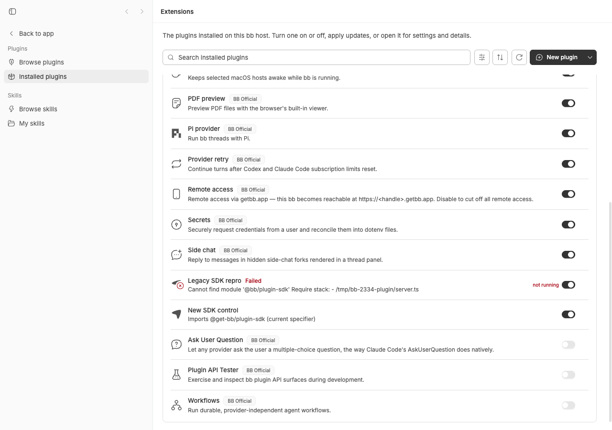
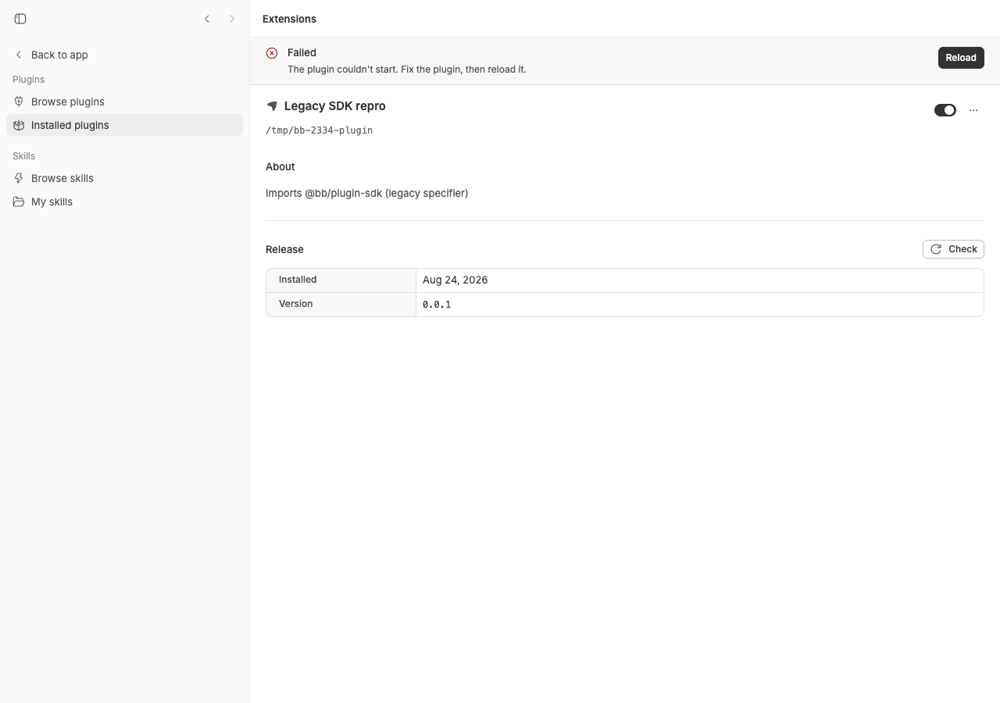
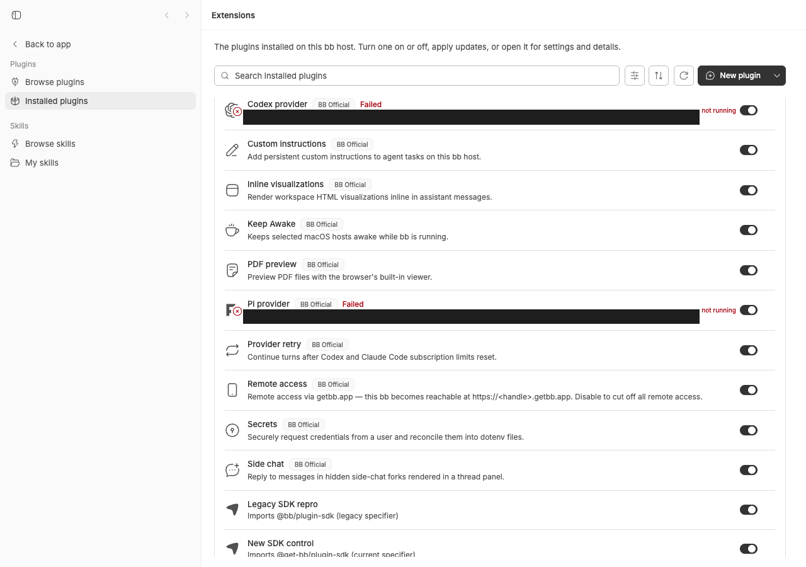

#2334 · Legacy @bb/plugin-sdk alias not registered in source dev mode (pnpm dev / dev:desktop), breaking plugins on the pre-rename specifier
Verdict: REPRODUCED · Root-cause confidence: high
Linked PR: #2335 — verdict REQUEST CHANGES: it fixes the reported symptom but, applied to current main, it breaks all four first-party provider plugins (Codex, Claude Code, Pi, ACP) in pnpm dev. Details in section 7.
1. TL;DR
When the bb server is run from source (pnpm dev, pnpm dev:desktop, and also vitest), a plugin whose server entry still imports the pre-rename SDK name @bb/plugin-sdk fails to load with Cannot find module '@bb/plugin-sdk'; the Extensions page shows the plugin as Failed. The same plugin loads in a packaged server. The cause is in apps/server/src/services/plugins/plugin-runtime.ts: the jiti alias map that translates both @get-bb/plugin-sdk and the legacy @bb/plugin-sdk is only built when a file named plugin-sdk-runtime.js exists next to the running module. That file is produced by the server's build script into dist/; the dev server runs src/index.ts via tsx, so the lookup is for src/services/plugins/plugin-sdk-runtime.js, which never exists, and the alias is silently dropped. The current name @get-bb/plugin-sdk still resolves because jiti falls back to Node resolution from the server's own node_modules; nothing on disk is called @bb/plugin-sdk, so only the legacy specifier breaks. I reproduced it live on a dev instance at the base commit with a 7-line plugin, with a control plugin on the new name that loads fine, and with a vitest test at the exact loader code path (2 failing assertions on main). PR #2335 makes the legacy test pass but introduces a worse regression on current main: its prefix alias rewrites SDK subpath imports such as @get-bb/plugin-sdk/host to …/src/index.ts/host, so every first-party provider plugin fails to load in dev.
2. Claims vs findings
| Claim from the issue | Status | Evidence |
|---|---|---|
In pnpm dev / pnpm dev:desktop, a plugin importing @bb/plugin-sdk fails with Cannot find module '@bb/plugin-sdk'. | Verified | Live on my dev instance at 494f66526: bb plugin install /tmp/bb-2334-plugin → legacy-sdk-repro@0.0.1 error (Cannot find module '@bb/plugin-sdk' …); dev.log line WARN: [server] plugin legacy-sdk-repro failed to load: Cannot find module '@bb/plugin-sdk'. Screenshots below. Vitest repro fails 2/3 on main. |
| The Extensions page shows "Failed / The plugin couldn't start…". | Verified | assets/2334-plugin-detail.png. Exact copy differs for a path install ("Fix the plugin, then reload it." rather than "Reload the plugin. If it still fails, remove it and install it again."); the status and banner are the same. |
Cause: the alias is only registered when dist/plugin-sdk-runtime.js exists next to the running module, which only the build script produces; pnpm dev runs from src/ via tsx. | Verified | plugin-runtime.ts L93-96, L127-131 (permalinks in section 5). apps/server/package.json build emits dist/plugin-sdk-runtime.js; dev runs scripts/dev-supervisor.mjs which spawns node --conditions=source --import tsx src/index.ts. ls apps/server/src/services/plugins/plugin-sdk-runtime.js → No such file; apps/server/dist/plugin-sdk-runtime.js exists (1049 bytes). |
bb-plugin-dispatch@0.1.3 imports the legacy specifier. | Verified | npm pack bb-plugin-dispatch@0.1.3: server.ts:21: import { defineRpcContract, type BbPluginApi } from "@bb/plugin-sdk"; and dist/server.js:14: import { defineRpcContract } from "@bb/plugin-sdk";; dist/server.meta.json says sdkVersion 0.4.6. |
The prebuilt dist/server.js is ignored (SDK 0.4.6 vs running) and the source fallback is working as designed; the bug is only in what happens after falling back to source. | Partly refuted | The fallback is as designed (isPrebuiltServerSdkCompatible requires an exact 0.x version match). But the bug is not specific to the source fallback: the prebuilt dist/server.js also imports @bb/plugin-sdk (kept external by @bb/plugin-build), and my third vitest case shows an SDK-compatible prebuilt bundle fails identically in source mode. The missing alias affects both loader branches. |
No leftover @bb/plugin-sdk package exists in node_modules. | Verified | ls node_modules/@bb/ | grep plugin → only plugin-build; apps/server/node_modules/@get-bb/plugin-sdk → ../../../../packages/plugin-sdk. |
| The packaged nightly desktop app loads the same plugin version fine. | Unverified (not run) | Consistent with the code: the packaged server tree contains packages/bb-app/server/dist/plugin-sdk-runtime.js next to start-server.js, so existsSync is true there and both specifiers are aliased. I did not run a packaged build. |
Same code path is present unchanged on main. | Verified | git log 494f66526..origin/main -- apps/server/src/services/plugins/plugin-runtime.ts is empty; the gate was introduced by 4e07269cc (#1574, the rename) and has not changed since. |
{kind=link}
3. Environment
- bb source at
494f66526913557ab076e048218236f0a6610927(branchmainas of 2026-08-24), own worktree,pnpm install --frozen-lockfile+pnpm exec turbo run build. - macOS Darwin 25.5.0 (Apple Silicon), Node v22.23.1, pnpm workspace, jiti 2.7.0,
@get-bb/plugin-sdk0.4.16 (workspace), vitest 4.1.1. - Providers on the machine (read-only
bb provider list): codex (codex-cli 0.149.1), claude-code, pi, acp-cursor, acp-pi-acp, acp-do-computer, acp-grok. No provider turns were run; the bug is in plugin loading. - Own dev instance via
scripts/bb-dev-app current: Apphttp://localhost:16059, Serverhttp://localhost:24059, Host daemonhttp://127.0.0.1:32059, data dir~/.bb-dev/bb-machines-HOST.getbb.app-checkouts-bb-.claude-worktrees-wf_846839f8-f8a-54-2c8b46834495(deleted at cleanup).
4. Minimal reproduction
4a. Live, on a source dev server (what the reporter saw)
- Create a tiny plugin whose server entry uses the pre-rename specifier (files in
2334/repro/plugin/; the icon is any valid plugin SVG):mkdir -p /tmp/bb-2334-plugin/assets cat > /tmp/bb-2334-plugin/package.json <<'EOF' { "name": "bb-plugin-legacy-sdk-repro", "version": "0.0.1", "type": "module", "engines": { "bbPluginSdk": "^0.4.1" }, "bb": { "name": "Legacy SDK repro", "description": "Imports @bb/plugin-sdk (legacy specifier)", "branding": { "icon": "./assets/icon.svg" }, "server": "./server.ts" } } EOF cat > /tmp/bb-2334-plugin/server.ts <<'EOF' import { defineRpcContract, type BbPluginApi } from "@bb/plugin-sdk"; export default function plugin(_bb: BbPluginApi): void { void defineRpcContract; console.log("[legacy-sdk-repro] factory ran"); } EOF cp <any valid plugin icon>.svg /tmp/bb-2334-plugin/assets/icon.svg - Start a source dev server from the checkout and install the plugin:
scripts/bb-dev-app current # prints App/Server/Host daemon URLs + data dir eval "$(scripts/bb-dev-app env)" pnpm bb:dev plugin install /tmp/bb-2334-plugin --yes
expected: Installed: legacy-sdk-repro@0.0.1 running source: path:/tmp/bb-2334-plugin actual (494f66526): Installing bb-plugin-legacy-sdk-repro@0.0.1 from /tmp/bb-2334-plugin Plugins are full-trust code running inside the BB server. They can read all local BB data, including other plugins' secrets. Installed: legacy-sdk-repro@0.0.1 error (Cannot find module '@bb/plugin-sdk' Require stack: - /tmp/bb-2334-plugin/server.ts) source: path:/tmp/bb-2334-plugin
dev.log:@bb/server:dev: [11:29:55] WARN: [server] plugin legacy-sdk-repro failed to load: Cannot find module '@bb/plugin-sdk'
- Control: the identical plugin with
from "@get-bb/plugin-sdk"(andname/bb.namechanged) installs asrunningon the same server:new-sdk-control@0.0.1 running source: path:/tmp/bb-2334-plugin-new @bb/server:dev: [new-sdk-control] factory ran @bb/server:dev: [11:30:50] INFO: [server] plugin new-sdk-control@0.0.1 loaded
- Open
http://localhost:<app port>/extensions/plugins?view=installed.


4b. Unit-level, at the exact loader code path
Vitest also runs the server from src/, so it sits in the same condition as pnpm dev. 2334/repro/legacy-sdk-alias-source-mode.test.ts (drop into apps/server/test/services/plugins/) drives the real createPluginService with in-memory SQLite and three plugins: a control on @get-bb/plugin-sdk, a path install on @bb/plugin-sdk, and a git install with an SDK-compatible prebuilt dist/server.js on @bb/plugin-sdk (the shape bb-plugin-dispatch ships).
cd apps/server pnpm exec vitest run test/services/plugins/legacy-sdk-alias-source-mode.test.ts
actual (494f66526) — 2 failed | 1 passed:
× legacy: a path plugin on the pre-rename @bb/plugin-sdk specifier loads (source fallback path)
AssertionError: expected 'Cannot find module \'@bb/plugin-sdk\'…' to be null
+ Received: "Cannot find module '@bb/plugin-sdk'
Require stack:
- /var/folders/.../bb-2334-C91Hzb/bb-plugin-sdk-legacy/server.ts"
× legacy: an SDK-compatible prebuilt dist/server.js on @bb/plugin-sdk loads too (prebuilt path)
+ Received: "Cannot find module '@bb/plugin-sdk'
Require stack:
- /var/folders/.../bb-2334-pbl2zB/bb-plugin-sdk-legacy-dist/dist/server.js"
✓ control: a path plugin on the current @get-bb/plugin-sdk specifier loads
The failing assertion in each case is expect(entry.statusDetail).toBeNull(): the service reports the plugin in error with the module-not-found message. Full output: vitest-base-494f66526.txt.
Repro test source (inline)
import { mkdtemp, mkdir, rm, writeFile } from "node:fs/promises";
import { tmpdir } from "node:os";
import { join } from "node:path";
import { afterEach, beforeEach, describe, expect, it } from "vitest";
import { createConnection, migrate, upsertInstalledPlugin, type DbConnection } from "@bb/db";
import { PLUGIN_SDK_MAJOR, PLUGIN_SDK_VERSION } from "@bb/domain";
import type { Logger } from "@bb/logger";
import { createAiServiceRegistry } from "../../../src/services/ai/ai-service-registry.js";
import { createPluginService, type PluginService } from "../../../src/services/plugins/plugin-service.js";
import { testLogger } from "../../helpers/test-app.js";
import { createNoopTelemetryService } from "../../../src/services/system/telemetry.js";
const logger = testLogger as unknown as Logger;
function serverSource(specifier: string): string {
return `import { defineRpcContract } from "${specifier}";
export default function plugin() {
if (typeof defineRpcContract !== "function") throw new Error("sdk not loaded");
}
`;
}
function gitPersistence(url: string) {
return {
provenance: { kind: "direct" } as const,
sourceIntent: { kind: "git" as const, url, subdirectory: null,
selector: { kind: "ref" as const, ref: "v1", refKind: "branch" as const } },
exactResolution: { kind: "git" as const, commit: "test-commit" },
updateState: { lastCheckAt: null, availableCompatibleVersion: null, newestIncompatibleVersion: null, statusDetail: null },
activeArtifactId: null,
};
}
describe("legacy @bb/plugin-sdk specifier in source (dev) mode — #2334", () => {
let db: DbConnection; let workDir: string; let service: PluginService;
beforeEach(async () => {
db = createConnection(":memory:"); migrate(db);
workDir = await mkdtemp(join(tmpdir(), "bb-2334-"));
service = createPluginService({
aiServices: createAiServiceRegistry(), telemetry: createNoopTelemetryService(), db,
hub: { getDaemonSessionIdForHost: () => null, notifyPluginSignal: () => 0, notifySystem: () => {} },
logger, dataDir: join(workDir, "data"), appVersion: "0.9.0", loadTimeoutMs: 2000,
});
});
afterEach(async () => { await service.stop(); await rm(workDir, { recursive: true, force: true }); });
async function writeSourcePlugin(name: string, specifier: string): Promise<string> {
const rootDir = join(workDir, name);
await mkdir(rootDir, { recursive: true });
await writeFile(join(rootDir, "package.json"), JSON.stringify({
name, version: "0.1.0", type: "module",
bb: { name, description: `imports ${specifier}`, branding: { icon: "Zap" }, server: "./server.ts" },
}));
await writeFile(join(rootDir, "server.ts"), serverSource(specifier));
return rootDir;
}
it("control: a path plugin on the current @get-bb/plugin-sdk specifier loads", async () => {
const entry = await service.installPath(await writeSourcePlugin("bb-plugin-sdk-current", "@get-bb/plugin-sdk"));
expect(entry.statusDetail).toBeNull();
expect(entry.status).toBe("running");
});
it("legacy: a path plugin on the pre-rename @bb/plugin-sdk specifier loads (source fallback path)", async () => {
const entry = await service.installPath(await writeSourcePlugin("bb-plugin-sdk-legacy", "@bb/plugin-sdk"));
expect(entry.statusDetail).toBeNull(); // FAILS on 494f66526
expect(entry.status).toBe("running");
});
it("legacy: an SDK-compatible prebuilt dist/server.js on @bb/plugin-sdk loads too (prebuilt path)", async () => {
const rootDir = join(workDir, "bb-plugin-sdk-legacy-dist");
await mkdir(join(rootDir, "dist"), { recursive: true });
await writeFile(join(rootDir, "package.json"), JSON.stringify({
name: "bb-plugin-sdk-legacy-dist", version: "0.1.0", type: "module",
bb: { name: "legacy dist", description: "prebuilt on @bb/plugin-sdk", branding: { icon: "Zap" }, server: "./server.ts" },
}));
await writeFile(join(rootDir, "server.ts"), `throw new Error("source must not load");\n`);
await writeFile(join(rootDir, "dist", "server.js"), serverSource("@bb/plugin-sdk"));
await writeFile(join(rootDir, "dist", "server.meta.json"),
JSON.stringify({ sdkMajor: PLUGIN_SDK_MAJOR, sdkVersion: PLUGIN_SDK_VERSION }));
upsertInstalledPlugin(db, { ...gitPersistence("https://github.com/acme/bb-plugin-sdk-legacy-dist"),
id: "sdk-legacy-dist", source: "git:github.com/acme/bb-plugin-sdk-legacy-dist@v1", rootDir, version: "0.1.0", enabled: true });
await service.reload("sdk-legacy-dist");
const entry = service.list().find((plugin) => plugin.id === "sdk-legacy-dist");
expect(entry?.statusDetail).toBeNull(); // FAILS on 494f66526
expect(entry?.status).toBe("running");
});
});
Repro files: 2334/repro/
5. Root cause
The alias map handed to jiti is computed once at module load, gated on a file that only exists in a built tree (plugin-runtime.ts L85-L131):
const pluginSdkRuntimePath = join(
dirname(fileURLToPath(import.meta.url)), // src/services/plugins/ under tsx, dist/ when built
"plugin-sdk-runtime.js",
);
const PLUGIN_SDK_SPECIFIER = "@get-bb/plugin-sdk";
const LEGACY_PLUGIN_SDK_SPECIFIER = "@bb/plugin-sdk";
…
export function pluginSdkAliasFor(runtimePath: string): Record<string, string> {
return {
[PLUGIN_SDK_SPECIFIER]: runtimePath,
[LEGACY_PLUGIN_SDK_SPECIFIER]: runtimePath,
};
}
const pluginSdkAlias: Record<string, string> | undefined = existsSync(
pluginSdkRuntimePath,
)
? pluginSdkAliasFor(pluginSdkRuntimePath)
: undefined; // <- every source-mode run lands here
and is applied to every plugin load, source or prebuilt (L1679-L1690):
const jiti = createJiti(import.meta.url, {
moduleCache: false,
...(pluginSdkAlias === undefined ? {} : { alias: pluginSdkAlias }),
});
// Same jiti instance for source and prebuilt dist/server.js, so the
// @get-bb/plugin-sdk resolution (and its legacy @bb/plugin-sdk alias)
// applies identically to both.
const mod = (await jiti.import(await resolveServerEntry(row, manifest))) …
The runtime bundle is an output of the server's build script only (package.json L9-L10: … build-node-entry.mjs ../../packages/plugin-sdk/src/index.ts dist/plugin-sdk-runtime.js), while dev runs scripts/dev-supervisor.mjs, which spawns node --conditions=source --import tsx src/index.ts (dev-supervisor.mjs L12). Under tsx, import.meta.url of plugin-runtime.ts is …/apps/server/src/services/plugins/plugin-runtime.ts, so pluginSdkRuntimePath is …/src/services/plugins/plugin-sdk-runtime.js: not a build output location, never present. The doc comment above the gate says "Source-checkout servers resolve the workspace package naturally", which is true for the current name only.
Why only the legacy name breaks. jiti 2.7.0's resolver (jitiResolve in jiti/dist/jiti.cjs) applies alias first, then tries resolvePathSync from the importing file, and finally falls back to nativeRequire.resolve(id) where nativeRequire = createRequire(<plugin-runtime.ts URL>). That last step walks up from apps/server/src/services/plugins/ and finds apps/server/node_modules/@get-bb/plugin-sdk (a workspace symlink to packages/plugin-sdk), so @get-bb/plugin-sdk and its subpaths resolve without any alias. Nothing named @bb/plugin-sdk exists anywhere on disk, so without the alias that specifier has no resolution path at all. The failure is the raw Node/jiti "Cannot find module" with the plugin's entry in the require stack, exactly as logged.
Both loader branches are affected. @bb/plugin-build keeps both SDK specifiers external in dist/server.js (build-plugin-server.ts L44-L72), so a prebuilt bundle compiled before the rename also imports @bb/plugin-sdk at runtime. My third test case shows an SDK-compatible prebuilt bundle fails the same way in source mode; the reporter's "it only matters after falling back to source" is incidental to their plugin's stale server.meta.json.
Deeper issue (pre-existing, and the trap PR #2335 falls into). jiti's alias is a prefix rewrite: with { "@get-bb/plugin-sdk": "/x/plugin-sdk-runtime.js" }, the specifier @get-bb/plugin-sdk/host becomes /x/plugin-sdk-runtime.js/host. @bb/plugin-build already documents this for packaged servers and works around it by bundling SDK subpaths into dist/server.js (L58-L72). That means a source-loaded plugin (path install, or any builtin in a source checkout) that imports an SDK subpath depends on the alias being absent. Today the alias is absent in source mode (the bug here) and present in packaged mode (where such a plugin would break). Any fix must alias exact export subpaths, not a prefix.
6. Proposed fix (first principles)
Confidence: high on the cause; the fix below is verified only by the jiti resolution experiment in jiti-alias-experiment.mjs (output: jiti-alias-experiment.out.txt), not by a full implementation.
- In
plugin-runtime.ts, stop keying the alias onexistsSync(pluginSdkRuntimePath)alone. In source mode (runtime bundle absent), do not alias@get-bb/plugin-sdkat all: it resolves naturally, including subpaths, and aliasing it to an entry file is what breaks subpaths. Alias only the legacy name. - Alias the legacy name per export subpath, derived from the SDK's
exportsmap (.,./ai-services,./provider-bridge,./provider-bridge/acp,./provider-bridge/testing,./app,./host,./internal/*), each mapped tofileURLToPath(import.meta.resolve("@get-bb/plugin-sdk" + subpath)). jiti normalizes alias keys longest-first, so@bb/plugin-sdk/hostmatches its own key before the bare key; the experiment shows@bb/plugin-sdk/host → packages/plugin-sdk/src/host.tswith this shape, while the PR's single-key shape yields…/src/index.ts/host. - Packaged mode has the mirror-image problem (only
plugin-sdk-runtime.jsis shipped, so source-loaded plugins importing a subpath resolve toplugin-sdk-runtime.js/host). The symmetric fix is for the server build to emit one runtime bundle per SDK export (e.g.dist/plugin-sdk-runtime/host.js) and build the same per-subpath alias map for both names from those files. That is a separate, larger change; at minimum the dev-mode fix must not make packaged-mode assumptions worse. - Regression tests: keep the three cases in
legacy-sdk-alias-source-mode.test.tsand addsdk-subpath-source-mode.test.ts(a source plugin importing a runtime value from@get-bb/plugin-sdk/ai-services), which passes on main today and must keep passing. A test that only asserts the alias target string (as #2335 does) cannot catch the subpath regression.
What could go wrong: a source plugin loaded through the legacy alias gets the SDK from src/*.ts (jiti-transpiled) while the server itself imports the same files through tsx, so there are two module instances. That is already the case for @get-bb/plugin-sdk today (jiti resolves it to packages/plugin-sdk/dist/index.js, a third copy), and the SDK runtime is tiny and stateless (plugin-sdk-runtime.js is 1 KB), so identity-based checks are not expected; worth a grep for instanceof on SDK classes before relying on it.
7. PR review
PR #2335 — "Fall back to a resolved @get-bb/plugin-sdk entry for the legacy SDK alias in source dev mode" (head a107b392c, base branch main, branched from 836e216c7)
What it changes. Extracts resolvePluginSdkAliasTarget(): if dist/plugin-sdk-runtime.js exists use it, otherwise fileURLToPath(import.meta.resolve("@get-bb/plugin-sdk")); the result feeds the existing two-key pluginSdkAliasFor(), so in source mode both @get-bb/plugin-sdk and @bb/plugin-sdk are now aliased to packages/plugin-sdk/src/index.ts. Adds one unit test asserting the fallback target ends in plugin-sdk/src/index.ts. Diff: pr-2335.diff (43+/6−).
Does it address the root cause? Partly. It removes the dev-mode gate, which is the cause of the report, and with it applied my legacy tests pass and the live plugin loads (plugin legacy-sdk-repro@0.0.1 loaded). But it keeps the prefix-alias shape and extends it to source mode, and it newly aliases the current specifier in source mode, which previously resolved naturally. That is what turns a latent packaged-mode limitation into a dev-mode breakage.
Blocking finding (severity: high). apps/server/src/services/plugins/plugin-runtime.ts, resolvePluginSdkAliasTarget() + the unchanged pluginSdkAliasFor() (PR lines 122-145): aliasing a bare package name to a single entry file makes jiti rewrite every subpath under it. On current main, commit e42a4ef48 (#2325, merged after this PR's base) made the first-party provider plugins import SDK subpaths from their server entries (plugins/provider-codex/server.ts → src/native-roots.ts → "@get-bb/plugin-sdk/host"; likewise provider-claude-code, provider-pi; provider-acp/src/agents.ts → "@get-bb/plugin-sdk/provider-bridge/acp"). With the PR cherry-picked onto 494f66526 and the dev server restarted, all four fail to load:
plugin provider-pi failed to load: Cannot find module '…/packages/plugin-sdk/src/index.ts/host' plugin provider-codex failed to load: Cannot find module '…/packages/plugin-sdk/src/index.ts/host' plugin provider-claude-code failed to load: Cannot find module '…/packages/plugin-sdk/src/index.ts/host' plugin provider-acp failed to load: Cannot find module '…/packages/plugin-sdk/src/index.ts/provider-bridge/acp'

…/src/index.ts/host path. Every provider is unusable in pnpm dev.Unit-level proof that this is a regression rather than pre-existing: sdk-subpath-source-mode.test.ts (a path plugin importing experimental_aiServiceErrorCodeSchema from @get-bb/plugin-sdk/ai-services) passes on 494f66526 (log) and fails with the PR applied (log): Cannot find module '…/packages/plugin-sdk/src/index.ts/ai-services'. The author's "verified against a clean install in a fresh worktree off main" was true for their base (836e216c7, where no plugin server entry imported a subpath — the only such import was plugins/keep-awake/host.ts, a host-side file); it is not true for main today. GitHub reports the PR as MERGEABLE (no textual conflict), so nothing would stop this from landing and breaking every developer's pnpm dev.
Other findings.
- Medium —
plugin-runtime.ts(PR L137-L145): the fallback also changes what@get-bb/plugin-sdkitself resolves to in source mode (frompackages/plugin-sdk/dist/index.jsvia jiti's natural resolution tosrc/index.tsvia alias). That is an unrequested behavior change for the current specifier; the report is about the legacy one only. If the intent is to unify, say so and test it; otherwise alias only@bb/plugin-sdk. - Medium — test coverage:
plugin-sdk-alias.test.tsasserts only that the resolved string ends insrc/index.ts. It does not load a plugin, so it cannot catch a wrong-but-defined target (the subpath case above) nor the actual symptom. A loader-level test like section 4b is needed; it is cheap (theprebuilt-server-loading.test.tsfixture pattern already exists). - Low —
resolvePluginSdkAliasTarget()swallows every error fromimport.meta.resolvewith a barecatch {}and returnsundefined, reproducing the original "silently unaliased" failure mode in any environment where the package is not resolvable. A log line would have made #2334 a five-minute diagnosis. - No wire-shape changes;
HOST_DAEMON_PROTOCOL_VERSIONis correctly untouched. Layering is right (server-owned plugin loading). No casts orunknownsmuggling. Typecheck of@bb/serverpasses with the PR on base (log).
Tests I ran. On the PR head as-is (a107b392c): the PR's own test passes (2/2), but my loader test cannot even import on that base (ai-service-registry.js does not exist there; log), which is itself a hint the branch is stale. With the PR cherry-picked onto 494f66526 (bf737bfa9 locally): plugin-sdk-alias.test.ts 2/2 and legacy-sdk-alias-source-mode.test.ts 3/3 pass (log); sdk-subpath-source-mode.test.ts fails; live dev server: legacy plugin loads, four provider plugins fail (dev-log-after-pr2335-restart.txt). Restoring 494f66526 and restarting: providers load again, legacy plugin fails again.
Verdict: REQUEST CHANGES. Rebase onto current main, alias only the legacy specifier in source mode and do it per export subpath (section 6), add a loader-level test for a legacy-specifier plugin and for a subpath import, and confirm all builtin provider plugins load under pnpm dev before re-requesting review.
8. Related issues
- #1574 — the
@bb/plugin-sdk → @get-bb/plugin-sdkrename that introduced the alias and itsexistsSyncgate (commit 4e07269cc). - #2325 — provider plugins as first-party plugins; introduced the server-side SDK subpath imports that PR #2335 breaks.
- #1577 — migrating vendored plugins to the published SDK (context for why third-party plugins still carry the old name).
- No open or closed issue other than #2334 mentions the legacy specifier failing (searched
@bb/plugin-sdkand "plugin-sdk alias").
9. Appendix
Commands run (in order)
gh issue view 2334 --comments; gh pr view 2335; gh pr diff 2335 git fetch origin main; git log 494f66526..origin/main -- apps/server/src/services/plugins/plugin-runtime.ts apps/server/package.json packages/plugin-sdk # empty git checkout -B repro-2334 494f66526 pnpm install --frozen-lockfile --prefer-offline; pnpm exec turbo run build ls apps/server/dist/plugin-sdk-runtime.js apps/server/src/services/plugins/plugin-sdk-runtime.js # dist exists, src does not ls node_modules/@bb/ | grep plugin; ls -la apps/server/node_modules/@get-bb/ npm pack bb-plugin-dispatch@0.1.3 (in /tmp); grep -n plugin-sdk package/server.ts package/dist/server.js; cat package/dist/server.meta.json scripts/bb-dev-app current; scripts/bb-dev-app env pnpm bb:dev plugin install /tmp/bb-2334-plugin --yes # error: Cannot find module '@bb/plugin-sdk' pnpm bb:dev plugin install /tmp/bb-2334-plugin-new --yes # control, running pnpm bb:dev plugin reload legacy-sdk-repro; pnpm bb:dev plugin list doobie --headless < 2334/repro/doobie-screenshots.js cd apps/server && pnpm exec vitest run test/services/plugins/legacy-sdk-alias-source-mode.test.ts # 2 failed / 1 passed gh pr checkout 2335; pnpm exec vitest run … legacy-sdk-alias-source-mode.test.ts plugin-sdk-alias.test.ts # loader test cannot import on stale base git checkout -B pr2335-on-base 494f66526 && git cherry-pick a107b392c pnpm exec vitest run (both files) # 5 passed pnpm exec turbo run typecheck --filter=@bb/server # passes pnpm dev:restart-server; pnpm bb:dev plugin reload legacy-sdk-repro # running grep "failed to load" dev.log # 4 provider plugins fail doobie --headless < 2334/repro/doobie-after-pr.js pnpm exec vitest run test/services/plugins/sdk-subpath-source-mode.test.ts # fails with PR git checkout repro-2334; pnpm exec vitest run … sdk-subpath-source-mode.test.ts # passes on base node --conditions=source jiti-alias-experiment-2334.mjs # from apps/server pnpm dev:restart-server # providers load again on base pnpm dev:stop; cleanup
jiti alias experiment (apps/server, node --conditions=source)
resolved index: …/packages/plugin-sdk/src/index.ts resolved host : …/packages/plugin-sdk/src/host.ts [PR#2335 (entry-file alias)] @bb/plugin-sdk -> file://…/packages/plugin-sdk/src/index.ts [PR#2335 (entry-file alias)] @bb/plugin-sdk/host -> ERR Cannot find module '…/packages/plugin-sdk/src/index.ts/host' [PR#2335 (entry-file alias)] @get-bb/plugin-sdk -> file://…/packages/plugin-sdk/src/index.ts [PR#2335 (entry-file alias)] @get-bb/plugin-sdk/host -> ERR Cannot find module '…/packages/plugin-sdk/src/index.ts/host' [per-export alias] @bb/plugin-sdk -> file://…/packages/plugin-sdk/src/index.ts [per-export alias] @bb/plugin-sdk/host -> file://…/packages/plugin-sdk/src/host.ts [per-export alias] @get-bb/plugin-sdk -> file://…/packages/plugin-sdk/dist/index.js (unaliased: jiti's natural resolution) [per-export alias] @get-bb/plugin-sdk/host -> file://…/packages/plugin-sdk/dist/host.js
Dev log excerpts
Base, legacy plugin install and reload; control plugin:
@bb/server:dev: [11:29:55] WARN: [server] plugin legacy-sdk-repro failed to load: Cannot find module '@bb/plugin-sdk' @bb/server:dev: [11:30:45] WARN: [server] plugin legacy-sdk-repro failed to load: Cannot find module '@bb/plugin-sdk' @bb/server:dev: [new-sdk-control] factory ran @bb/server:dev: [11:30:50] INFO: [server] plugin new-sdk-control@0.0.1 loaded
After restarting the server with PR #2335 applied (full excerpt):
[11:36:46] INFO: [server] Server listening {"bindHost":"127.0.0.1","port":24059,…}
[legacy-sdk-repro] factory ran
[11:36:48] INFO: [server] plugin legacy-sdk-repro@0.0.1 loaded
WARN: [server] plugin provider-acp failed to load: Cannot find module '…/packages/plugin-sdk/src/index.ts/provider-bridge/acp'
WARN: [server] plugin provider-claude-code failed to load: Cannot find module '…/packages/plugin-sdk/src/index.ts/host'
WARN: [server] plugin provider-codex failed to load: Cannot find module '…/packages/plugin-sdk/src/index.ts/host'
WARN: [server] plugin provider-pi failed to load: Cannot find module '…/packages/plugin-sdk/src/index.ts/host'
After restoring 494f66526 and restarting:
[11:40:46] WARN: [server] plugin legacy-sdk-repro failed to load: Cannot find module '@bb/plugin-sdk' [11:40:47] INFO: [server] plugin provider-acp@0.1.0 loaded [11:40:48] INFO: [server] plugin provider-claude-code@0.1.0 loaded [11:40:48] INFO: [server] plugin provider-codex@0.1.0 loaded [11:40:48] INFO: [server] plugin provider-pi@0.1.0 loaded
Artifacts
2334/repro/plugin/— the 7-line legacy-specifier plugin used live.legacy-sdk-alias-source-mode.test.ts,sdk-subpath-source-mode.test.ts— loader-level tests; logsbase,PR on base,subpath base,subpath PR,PR head as-is.pr-2335.diff,typecheck log,jiti-alias-experiment.mjs/output.dev.log.txt— full dev instance log for the session;doobie-extensions.js,doobie-screenshots.js,doobie-after-pr.js— browser scripts for the screenshots.